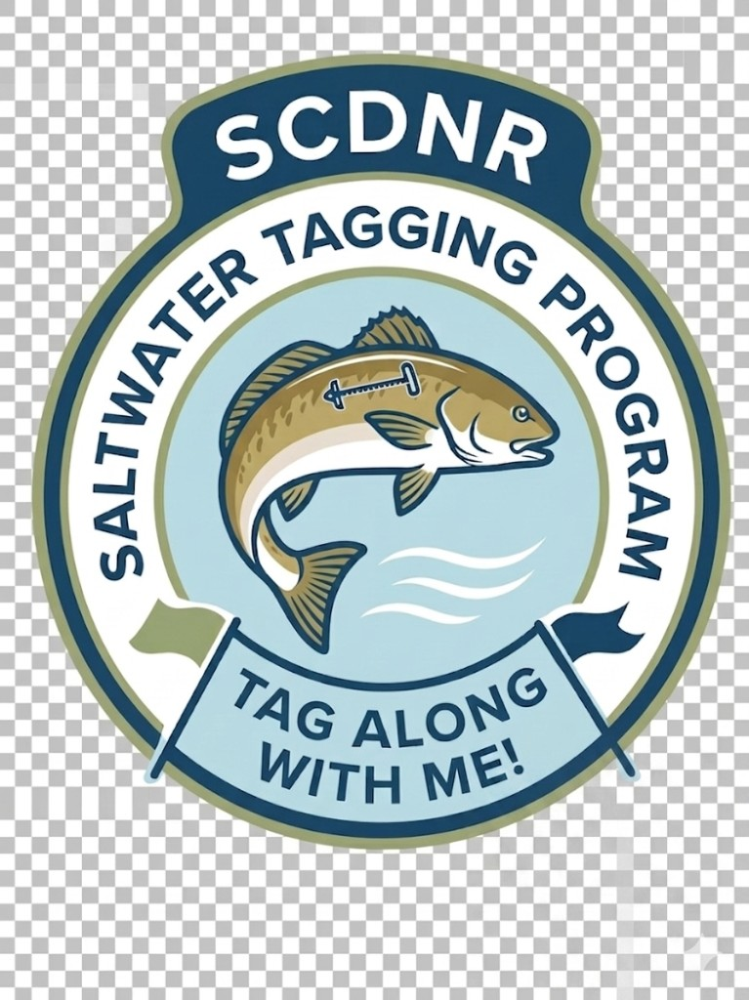

Zoom in for chart detail. Tap a grid cell to select — selected tile highlights in amber.
Catches Ready to Submit
0
Submit when you have cell service or Wi‑Fi. Catches are saved on this device until then.

Saltwater Tagging Program
Zoom in for chart detail. Tap a grid cell to select — selected tile highlights in amber.
Catches Ready to Submit
0
Submit when you have cell service or Wi‑Fi. Catches are saved on this device until then.